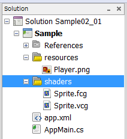
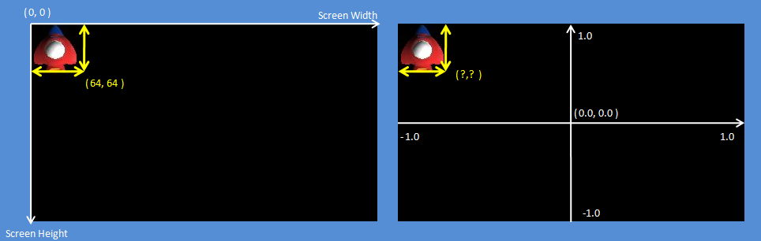

This chapter explains how to display an image on the screen.
Contents
The following is the procedure for displaying an image. Open the solution in the folder Tutorial/Sample02_01/.
The following procedure explains how to display an image.
Register the image file you want to display in the project.
In the PSM Studio Solution Explorer, select the resources folder, right click - [Add] - [Add File] and select the image file you want to display.
For details, see "About Build Action".
Register the shader program to the project.
Here, the vertex shader Sprite.vcg and fragment shader Sprite.fcg are registered to the project.
When the file is registered, right click - [Build Action], and set to ShaderProgram. When ShaderProgram is set to the build action, it will change Sprite.vcg and Sprite.fcg to a binary format Sprite.cgx file.

When the image file and shader program are registered to the project, perform the following initialization processing for the program.
Sample02_01/AppMain.cs
public static void Initialize ()
{
graphics = new GraphicsContext();
...
texture = new Texture2D("/Application/resources/Player.png", false);
shaderProgram = new ShaderProgram("/Application/shaders/sprite.cgx");
...
}
Texture2D
texture = new Texture2D("/Application/resources/Player.png", false); creates the texture. "Texture creation" refers to creation of the image in the video memory.
ShaderProgram
When reading the shader program in the program, specify Sprite.cgx that was created.
shaderProgram = new ShaderProgram("/Application/shaders/sprite.cgx"); will compile the shader program specified in the argument when executing. Then, processing can be performed using the method from shaderProgram.
Next, set the vertex buffer for rendering the texture. The following shows how to draw two triangular polygons and make them into a quadrilateral.

Look at the source code.
An area that retains the vertex coordinates, texture coordinates, vertex colors, and indices needs to be prepared for four vertices.
- Because 3 elements (x, y, and z) are required as vertex coordinates, 12 are allocated in a float array. z is used to specify the depth.
- Because 2 elements (u and v) are required as texture coordinates, 8 are allocated in a float array.
- Because 4 elements (r, g, b, and a) are required as vertex colors, 16 are allocated in a float array.
- 4 indices are allocated. An index is used to specify the vertex rendering order.
AppMain.cs
public class AppMain
{
...
static float[] vertices=new float[12];
static float[] texcoords = {
0.0f, 0.0f, // 0 top left.
0.0f, 1.0f, // 1 bottom left.
1.0f, 0.0f, // 2 top right.
1.0f, 1.0f, // 3 bottom right.
};
static float[] colors = {
1.0f, 1.0f, 1.0f, 1.0f, // 0 top left.
1.0f, 1.0f, 1.0f, 1.0f, // 1 bottom left.
1.0f, 1.0f, 1.0f, 1.0f, // 2 top right.
1.0f, 1.0f, 1.0f, 1.0f, // 3 bottom right.
};
const int indexSize = 4;
static ushort[] indices;
...
Set the vertex coordinates after the image file is read with Initialize().
AppMain.cs
public static void Initialize ()
{
graphics = new GraphicsContext();
ImageRect rectScreen = graphics.Screen.Rectangle;
texture = new Texture2D("/Application/resources/Player.png", false);
shaderProgram = new ShaderProgram("/Application/shaders/Sprite.cgx");
shaderProgram.SetUniformBinding(0, "u_ScreenMatrix");
vertices[0]=0.0f; // x0
vertices[1]=0.0f; // y0
vertices[2]=0.0f; // z0
vertices[3]=0.0f; // x1
vertices[4]=texture.Height; // y1
vertices[5]=0.0f; // z1
vertices[6]=texture.Width; // x2
vertices[7]=0.0f; // y2
vertices[8]=0.0f; // z2
vertices[9]=texture.Width; // x3
vertices[10]=texture.Height; // y3
vertices[11]=0.0f; // z3
...
Next, set the vertex buffer. Vertex size 4 is specified in the first argument of VertexBuffer().
public static void Initialize ()
{
...
// vertex pos, texture, color
vertexBuffer = new VertexBuffer(4, indexSize, VertexFormat.Float3, VertexFormat.Float2, VertexFormat.Float4);
...
vertexBuffer.SetVertices(0, vertices);
vertexBuffer.SetVertices(1, texcoords);
vertexBuffer.SetVertices(2, colors);
vertexBuffer.SetIndices(indices);
graphics.SetVertexBuffer(0, vertexBuffer);
Copy vertex data to the vertex buffer using vertexBuffer.SetVertices().
Specify the vertex buffer to use for rendering using graphics.SetVertexBuffer().
Next, set a matrix that converts the pixel unit coordinate system to the default screen coordinate system.
public static void Initialize ()
{
...
ImageRect rectScreen = graphics.Screen.Rectangle;
...
screenMatrix = new Matrix4(
2.0f/rectScreen.Width, 0.0f, 0.0f, 0.0f,
0.0f, -2.0f/rectScreen.Height, 0.0f, 0.0f,
0.0f, 0.0f, 1.0f, 0.0f,
-1.0f, 1.0f, 0.0f, 1.0f
);
}
ImageRect rectScreen = graphics.Screen.Rectangle; obtains the screen size.
In 2D game coordinate systems, normally the upper left is the origin and the Y-axis increases toward the bottom of the screen. In addition, one unit is one pixel of the display resolution.
In the default screen coordinate systems, the screen center is the origin, the right side of the screen is 1.0, the left side is -1.0, the top side is 1.0, and the bottom side is -1.0.
2D Game Coordinate System (left) and the Screen Coordinate System (right)
Therefore, for displaying polygons specified with a 2D game coordinate system (hereafter "pixel coordinate system"), the vertices must be converted to a screen coordinate system for displaying on screen.
The value set with Matrix4() is for performing this conversion.
After specifying each element, execute the render command.
public static void Render ()
{
graphics.Clear();
graphics.SetShaderProgram(shaderProgram);
graphics.SetTexture(0, texture);
shaderProgram.SetUniformValue(0, ref screenMatrix);
graphics.DrawArrays(DrawMode.TriangleStrip, 0, indexSize);
graphics.SwapBuffers();
}
DrawArrays() is a render execution function.
When executed, the image will be displayed on the screen.
It is recommended that you make the image display code from this chapter reusable as a class. Definitions of classes are described in TutoLib/SimpleSprite.cs.
Note: This SimpleSprite class is a simplified version created for explanation in this programming guide; its processing is not optimized for rendering. For high-speed rendering, refer to Efficient Sprite Rendering.